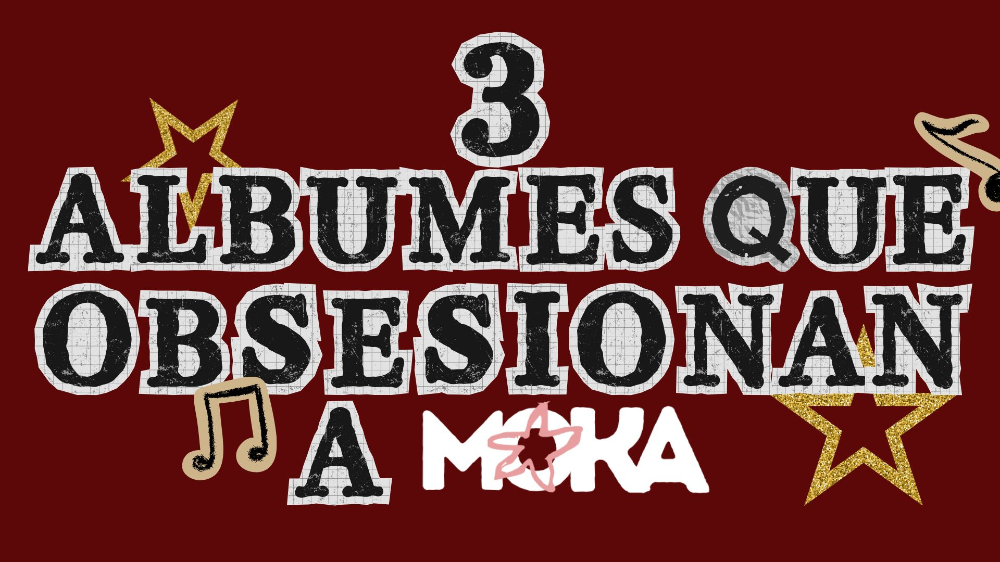

La música acompaña nuestros procesos creativos, se convierte en refugio y muchas veces pone palabras a aquello que no sabemos expresar. En este espacio compartimos pequeños bocados musicales: álbumes que nos inspiran, canciones que nos acompañan y descubrimientos que forman parte del universo Moka.
Algunas de las recomendaciones que forman parte del universo sonoro de Moka.

Tres discos que nos acompañan durante horas de trabajo, inspiración y refugio. Una pequeña selección de aquello que define el sonido de Moka.
Leer artículo →Una banda sonora para tardes frías, cafés calientes y viajes en colectivo mientras el otoño transforma el paisaje.
Leer artículo →Nuevas recomendaciones, artistas y pequeñas obsesiones musicales llegarán pronto a Moka.